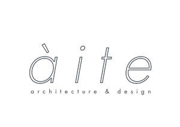

Trade Mark Journal No.2025/024 13 June 2025
UK00004196060 28 April 2025 (42,44)

- Class 42
- Architectural design; Design services for architecture; Architecture design services; Architecture; Architectural design services; Architectural design for interior decoration; Architectural services for the design of buildings; Design services relating to architecture; Design of building interiors; Design and development of computer hardware architecture; Engineering design; Preparation of architectural design; Architectural design for exterior decoration; Design of buildings; Design and development of computer software architecture; Design of furnishings; Interior design; Design services for building interiors; Consultancy in the field of architectural design; Architectural services for the design of industrial buildings; Design of furniture; Furniture design; Design services for the interior of buildings; Engineering services for the design of structures; Industrial art design; Interior design services; Engineering design and consultancy; Hardware design; Landscape lighting design; Design of interior decor; Decor (Design of interior -); Interior decor design; Engineering design services; Construction design; Design of building exteriors; Design consultancy; Design of artwork; Design of software; Software design; Architectural services for the design of commercial buildings; Interior design services for boutiques; Styling [industrial design]; Design of interior decoration; Furnishing design services for the interiors of buildings; Design of ornamental layouts; Planning [design] of buildings; Graphic art design; Graphic arts design; Design (Graphic arts -); Architectural services for the design of office buildings; Landscape lighting design services; Architecture services; Industrial design; Design (Industrial -); Design of sculptures; Architectural design for town planning; Architectural design services relating to exhibitions; Computer-aided engineering design services; Design of interior decor for shops; Design of engineering products; Urban design; Design and graphic arts design for the creation of web sites; Industrial and graphic art design; Interior decorating design; Design of space-frame structures; Automotive design; Building design services; Design of shopfitting systems; Graphic design; Architecture services for the preparation of architectural plans; Design and development of engineering products; Design services; Visual design; Commercial art design; Design of lighting systems; Design of industrial buildings; Commercial interior design; Design services for furniture; Computer-aided industrial design; Software design and development; Design services for art-work; Textile design services; Interior architectural services; Industrial engineering design services; Interior design services for shops; Design of kitchens; Design of typefaces; Computer aided design services relating to architecture; Graphic design services; Design of graphic software systems; Design and development of networks; Computer-aided engineering design and drawing services; Art work design; Furnishing design services for the interiors of aircraft; Design of tooling; Professional services relating to architectural design; Design services relating to interior decoration; Design and development of databases; Design of shops; Design planning; Design of jewellery; Design of stationery; Interior and exterior design services; Engineering consultancy relating to design; Shop interior design; Packaging design; Design of packaging; Design of restaurants; Design of engineered building systems; Architectural services for the design of office facilities; Architectural services for the design of shopping centers; Jewelry design; Architectural and engineering services; House design; Engineering services for the design of machinery; Architectural design services in the fields of traffic and transportation; Furnishing design services for the interiors of ships; Consultancy in the design and development of computer hardware; Computer hardware (Consultancy in the design and development of -); Design of hotels; Design and development of telecommunications systems; Design of clothing; Interior design services incorporating the principles of feng shui; Furnishing design services for the interiors of automobiles; Design of communication systems; Consultancy services relating to interior design; Office layout design services; Architecture consultancy services; Technical design; Design and development of endoprostheses; Database design and development; Industrial design services; Engineering services relating to architecture.
- Class 44
- Landscape design; Design (Landscape -); Landscape architecture; Landscape design services; Landscape architecture services; Floral design; Consultancy relating to landscape design; Planning [design] of gardens; Design of gardens and landscapes; Floral design services; Garden design services.
John-Alec Fowler